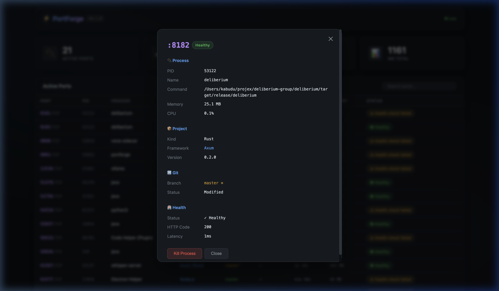
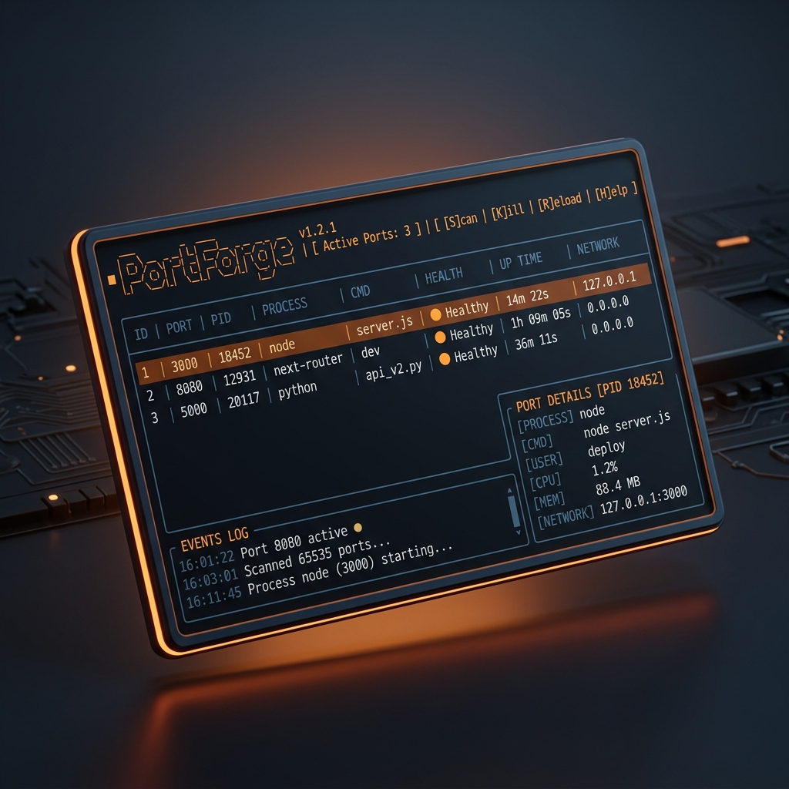

Cross-platform
Built for macOS, Linux, and Windows developer workflows.
Rust-native clarity for crowded dev machines
PortForge gives developers a fast, project-aware view of local ports with process ownership, framework detection, Git context, Docker metadata, health probes, and safe cleanup workflows.
Command preview
Terminal-first
Why it feels different
PortForge is designed for the real work behind local development: tracing ownership, understanding health, spotting container mappings, and cleaning up drift without guessing.
Maps ports back to frameworks and repositories so you can tell a Next.js dev server from a FastAPI worker instantly.
Surfaces branch state, dirty repos, and container mappings so the right environment is obvious before you kill anything.
Checks whether a port is truly serving, not merely listening, with framework-aware defaults and per-port overrides.
See memory, CPU, and uptime to catch runaway processes and duplicate app instances before they snowball.
Dry-run cleanup and process inspection help you remove orphans and zombies with less risk to active work.
Use the TUI for speed, then switch to JSON, CSV, or table output for automation, reports, and debugging trails.
Workflow surfaces
The core experience is a polished Ratatui interface with fast inspection paths and keyboard-driven navigation. When you want a browser view, the optional dashboard exposes the same operational context in a cleaner visual surface.

Install
Use Cargo for the simplest path, download binaries from releases, or build from source with the optional web dashboard enabled.
Install via Cargo
cargo install portforge
Download the latest release
OS=$(uname -s | tr '[:upper:]' '[:lower:]')
[ "$OS" = "darwin" ] && OS="macos"
ARCH=$(uname -m)
[ "$ARCH" = "arm64" ] && ARCH="aarch64"
curl -L "https://github.com/kabudu/portforge/releases/latest/download/portforge-${OS}-${ARCH}.tar.gz" | tar xz
sudo mv portforge /usr/local/bin/
Build from source
git clone https://github.com/kabudu/portforge.git cd portforge cargo build --release # optional web dashboard cargo build --release --features web
Release artifacts are available for platform-specific installs.
The optional dashboard is enabled with the
web feature flag.
FAQ
It adds developer context: project detection, framework heuristics, Git branch state, Docker mappings, health probes, resource usage, and safer cleanup paths.
Yes. The default experience is the terminal UI and CLI. The web
dashboard is optional and enabled only when you build with the
web feature.
Yes. It includes cleanup workflows and dry-run support so you can review likely orphans before terminating them.
Yes. You can inspect interactively in the TUI and export structured output as JSON or CSV for scripts and operational tooling.